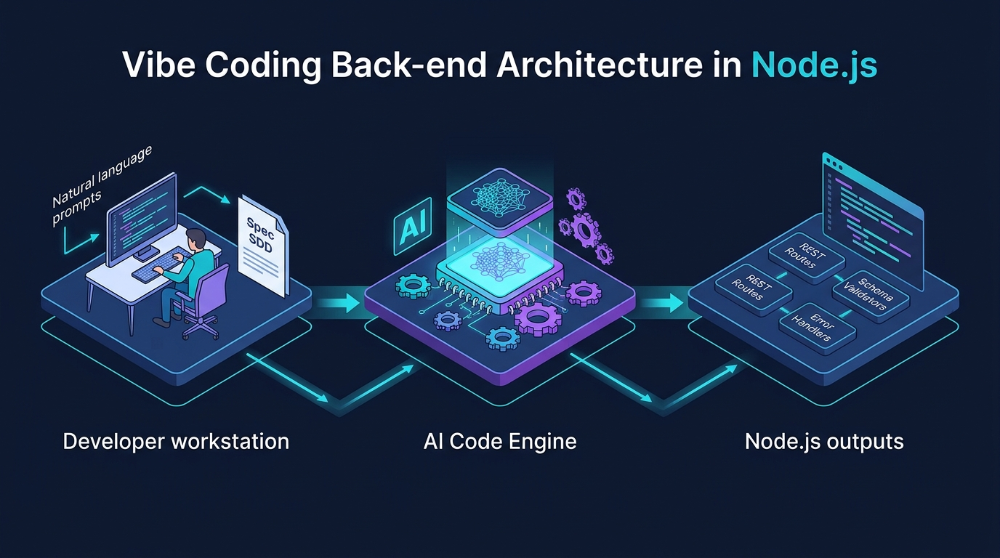

Aula 02: Configuração de Ambiente Node.js e Arquitetura Web na Prática (Laboratório)

1. Objetivos de Aprendizagem
Ao concluir este laboratório presencial, você será capaz de:.env (--env-file) e cliente de teste de APIs.POST usando JavaScript Vanilla no Node.js.2. Fundamentação Teórica (Markdown)
2.1 Anatomia do Protocolo HTTP na Arquitetura Cliente-Servidor
Toda comunicação entre um front-end (seja em JavaScript Vanilla ou React) e um back-end (Node.js ou PocketBase) fundamenta-se na troca de mensagens HTTP:GET, POST, PUT, PATCH, DELETE), URI (/cursos?turno=noite), Headers (Content-Type: application/json, Authorization: Bearer ...) e Body (carga útil serializada em JSON).200 OK, 201 Created, 400 Bad Request, 404 Not Found, 500 Internal Server Error), Headers de resposta (incluindo políticas de CORS) e Body de retorno.2.2 Variáveis de Ambiente Nativas no Node.js
Boas práticas de engenharia de software (12-Factor App) determinam que portas de rede, chaves secretas e URLs do PocketBase jamais devem ser escritas diretamente no código-fonte (hardcoded). A partir do Node.js 20.6+, carregamos variáveis diretamente sem pacotes externos usando a flag--env-file=.env.
---
3. Atividade Prática Guiada (Hands-on)
Passo 1: Especificação de Parser JSON Assíncrono com Vibe Coding
Solicite ao assistente de IA a criação de uma função utilitária para ler o corpo (stream) de uma requisição HTTP em Node.js puro com limite de tamanho contra ataques de sobrecarga:[SPEC-PROMPT]: Escreva uma função assíncrona lerBodyJson(req) em Node.js puro (JavaScript ES6+) que colete os chunks da requisição HTTP, aplique um limite de segurança de 1MB e faça o JSON.parse, lançando um erro com statusCode 400 caso o JSON seja inválido.Passo 2: Código de Referência do Laboratório
// src/httpParser.js — Leitura Segura de Stream JSON em Node.js
export async function lerBodyJson(req, limiteBytes = 1024 * 1024) {
return new Promise((resolve, reject) => {
let dados = '';
let bytesRecebidos = 0;
req.on('data', (chunk) => {
bytesRecebidos += chunk.length;
if (bytesRecebidos > limiteBytes) {
const erro = new Error('Payload excede o limite máximo de 1MB.');
erro.statusCode = 413;
reject(erro);
req.destroy();
return;
}
dados += chunk.toString('utf-8');
});
req.on('end', () => {
if (!dados) return resolve({});
try {
resolve(JSON.parse(dados));
} catch {
const erro = new Error('Formato JSON malformado no corpo da requisição.');
erro.statusCode = 400;
reject(erro);
}
});
req.on('error', reject);
});
}Passo 3: Teste de Validação no Laboratório
Teste o parser enviando um JSON válido e um JSON malformado viacurl ou script de teste para verificar o retorno exato do código 400 Bad Request.